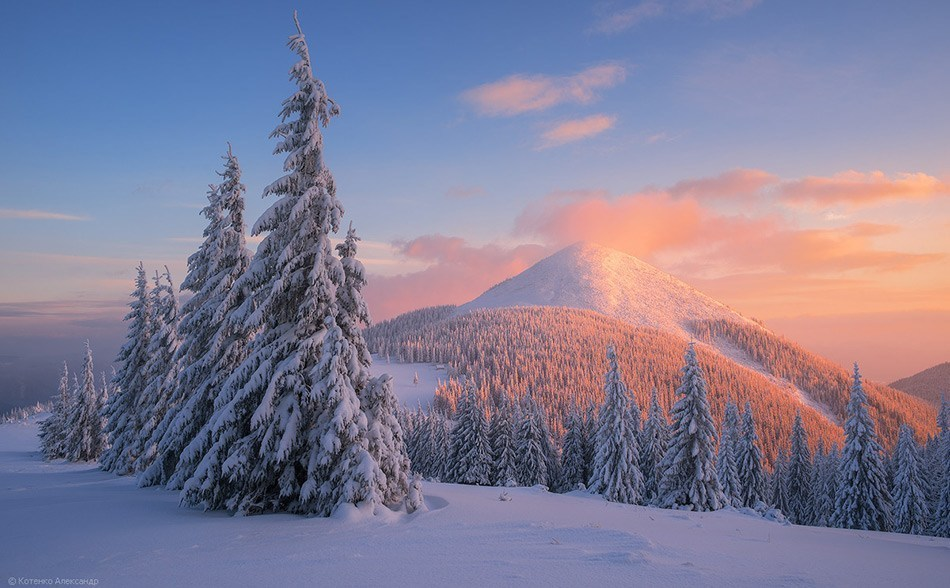
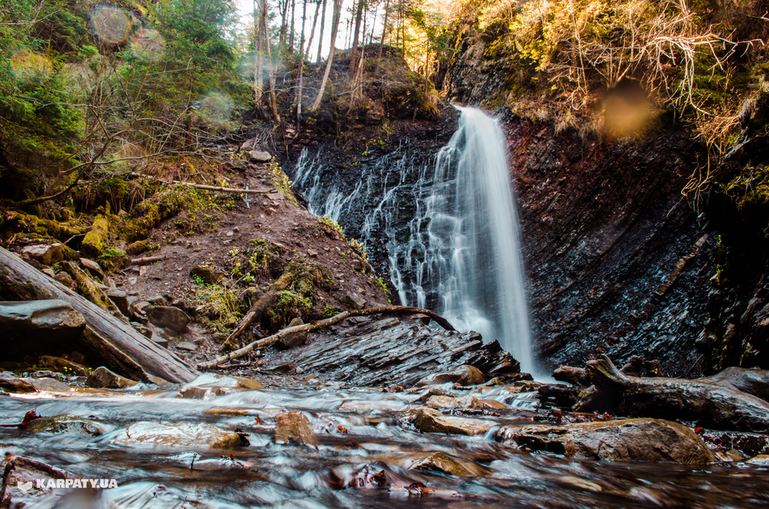
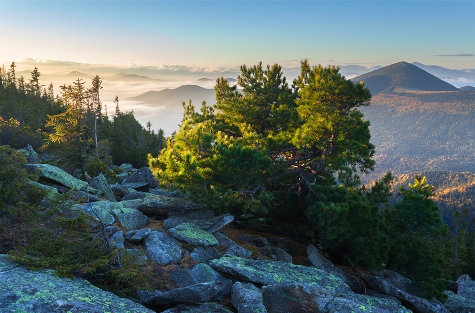

Гора Хом’як
— одна з типових локацій для нескладного одноденного маршруту. Щоб краще пояснити, наскільки нескладно підійматись на Хом’як теплої пори року, скажемо так: на нього підіймаються сім’ї з малолітніми дітьми, а попід вершиною, на полонині Хом’яків, часто-густо стоять намети тих, хто виліз трохи повище для святкування днів народжень чи будь-яких календарних свят.

Причин “популярності” Хом’яка декілька:
- по-перше, початок сходження на гору знаходиться дуже близько до вузлів транспортного сполучення;
- по-друге, Хом’як — вершина неподалік Яблуниці, Татарова та Поляниці з Буковелем, до яких з того ж Івано-Франківська їхати не більше 1 год. 40 хв.;
- по-третє, варіантів підйому на Хом’як декілька, і більшість з них — це прогулянка серпантинною стежиною, що в’ється казковим лісом, поступово набираючи висоту.
А ще з Хом’яка погожої днини видно Чорногірський хребет — найвищий в Україні, та й загалом панорама на сусідні вершини з будь-якої більш-менш високої гори теж запам’ятається надовго.
Таким чином, якщо зранку, годинці о восьмій, вийти на маршрут, за один день без особливого перенапруження для юних туристських організмів, можна: зайти на полонину Хом’яків, взяти вершину, зробити кілька пам’ятних знімків і широко розкинувши руки покричати “Еге-гей!” згори, спуститись на полонину для перепочину та умовного обіду, рушити на Гук, покричати “Ого-го!”, його побачивши, неквапом дійти від водоспаду до траси і сісти на вечірній автобус до міста. Як вам такий план дій?
Похід на Хом’як: варіанти для підйому та спуску
Зійти на Хом’як можна п’ятьма різними стежками. Дві з них йдуть від водоспаду Гук та КПП, що веде до нього. Ще дві — стежки з траси с. Поляниця та початку траси на Буковель перед Яблуницею. І, нарешті, п’ята — стежка з сусідньої гори Синяк, якщо ви раптом вирішили довше пройтись Ґорґанами.

З усього переліченого краще обирати підйом від КПП та підйом від буковельської траси — там на вас чекають переважно серпантинні набори висоти, без різких перепадів та непролазних хащів. До того ж, саме до цих точок виходу найлегше та найшвидше дістатись громадським транспортом.
З Хом’яка спускатись можна тим самим набором стежок. Врахуйте тільки, що піймати попутку чи автобус буде легше в Поляниці та на виході з Гуку. Орієнтовний час, коли вам конче треба опинитися на трасі — 19 або 19:30. Пізніше шансів швидко сісти у громадський транспорт майже немає — маршрутки ще ходитимуть десь до 21 години, проте значно рідше, ніж вдень.
Зверніть увагу на те, що вечірні автобуси завжди переповнені, особливо в неділю: багато хто повертається до Франківська на навчання чи роботу, тому великій туристичній групі краще використовувати кожну нагоду посадити групу частинами і домовитись про зустріч, аніж чекати дива у вигляді пустого автобусу, куди можуть вміститися всі одночасно.
Ще одна досить неприємна особливість вечірнього повертання на базу чи в місто: не всі водії охочі до туристів з рюкзаками і деякі навіть можуть відмовитись вас везти. Такі випадки вкрай поодинокі, проте не дуже дивуйтесь і не дуже засмучуйтесь, якщо таке справді станеться.

Для груп у випадку пізнього виходу з маршруту завжди є варіанти, де себе подіти, як немає чим дістатись цивілізації: прикладом, можна орендувати авто і за проїзд заплатити трохи більше, ніж у автобусі. На крайній випадок можна лишитись на ночівлю у селі — це теж буде поза запланованим бюджетом поїздки, зате всі лишаться в теплі та спокої.
За бажанням, з Хом’яка можна далі піти Ґорґанами через гору Синяк на Малий Ґорґан, гори Довбушанку та Ведмежик. Цей похід може затягтись на 3-4 дні.
Колиби
На полонині, що попід вершиною, є одразу декілька колиб. Влітку в них живуть гуцули, а решту пір року — туристи, яким у будиночках ночувати затишніше, аніж у наметах. Пічок як таких колиби не мають — у кількох з них є костровище і дірка у даху, аби дим виходив. Якщо для осені та середини весни такий варіант ще підходить — ночувати з вогнищем, то взимку ночівля тут — сумнівне задоволення. Тим паче, що на Хом’яку після трагедії 2010 року поставлені попереджувальні знаки: гора, хоч з виду і не скажеш, лавинонебезпечна. Снігу тут лежить чимало навіть на початку травня.
Колиб станом на серпень 2015 року було п’ять, і ще кілька будувались. Знайти їх нескладно: вони стоять одразу ж за смугою лісу на полонині, добре проглядаються майже у будь-яку погоду. Але на випадок густого туману тримайте координати.
Координати колиб
- 48.373165, 24.496538;
- 48.373264, 24.494707.
Вода на маршруті
Води у поході на Хом’як буде предостатньо: з якого б боку ви не вирішили заходити на вершину, майже скрізь вас будуть супроводжувати струмки та потічки. Пити воду з джерела можна, але краще поперед тим її прокип’ятити: набирати водичку краще не на початку маршруту, а десь ближче до витоків струмка.
До речі, от вам дієвий лайф-хак: водичку набирайте, зануривши пляшку у воду напрямком по течії, а не підставляючи під спадаючі струмені води, як зазвичай роблять у фільмах. Так у вашу пляшку не потрапить зайве сміття, що несе течія. І щоб не було проблем з зануренням пляшки у струмок, краще користуватись малою тарою — об’ємом 0.5-0.7 літра.
Координати джерел:
- 48.362885,24.509474 — джерело на маршруті з Пд.-Сх. сторони гори. Підйом з траси на Буковель.
- 48.370829, 24.497994 — джерело перед полониною. Роскульський струмок
- 48.373647, 24.493419 — джерело на полонині Хомяків біля гуцульських колиб
- 48.378684, 24.484607 — джерело на пол. Хомяків перед підйомом на гору
Як дістатись:
Доїхати до початку маршруту можна автобусом з Івано-Франківська на Яблуницю (підходить транспорт у напрямку Ясіня, Лазещини, Рахова) чи на Поляницю (у напрямку Буковелю).
Час у дорозі: до 2 годин.
Відправлення автобусів відбувається кожні півгодини, якщо навіть не частіше. Зауважте, з АС-1 відправляються обласні маршрутки, а з АС-2 — міжобласні, які теж йдуть у потрібному вам напрямку.
Маршрут на гору Хом’як